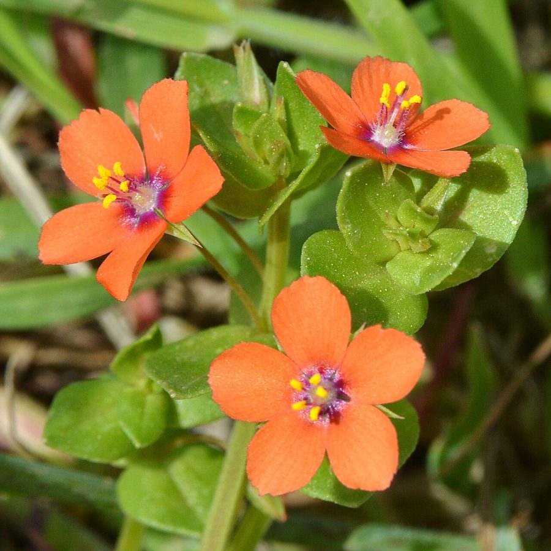

कृष्णनीलScarlet Pimpernel
Lysimachia arvensis · Primulaceae · FLR-0147

- Scientific nameवैज्ञानिक नाम
- Lysimachia arvensis (L.) U. Manns & Anderb.
- Familyकुल
- Primulaceae
- Hindiहिंदी
- कृष्णनील
- Local namesस्थानीय नाम
- krishna neel, krishnaneel, jonkmari, billi booti, scarlet pimpernel
- Status hereयहाँ की स्थिति
- naturalized
- Movementआवागमन
- Resident, here all year
- IUCNIUCN
- not evaluated
- Reviewसमीक्षा
- audited and independently read
When to look कब देखें
Expected mainly in January, February, March, April, May, October, November, December.मुख्यतः जनवरी, फ़रवरी, मार्च, अप्रैल, मई, अक्टूबर, नवंबर, दिसंबर में अपेक्षित।
Uses and possibilities उपयोग और संभावनाएँ
Drawn from the documented uses in the profile below, where each is labelled traditional, current or a research lead. All uses →
कृष्णनील / Scarlet Pimpernel
Lysimachia arvensis (L.) U. Manns & Anderb. — Primulaceae
कृष्णनील (स्कार्लेट पिम्पेरनेल, गरीब का मौसम-घड़ी) — यूरोप की छोटी बेल जिसके नीले-लाल फूल सर्दियों में खेतों और बाग़ों में दिखते हैं। पत्तियाँ छोटी, विपरीत, पूरी पत्ती पर बिखरे हुए लाल बिंदु होते हैं। भारत में अब आम है। पूरा पौधा थोड़ा ज़हरीला है — पत्तियों में सैपोनिन होते हैं। मवेशियों के लिए घास के साथ खा लिया जाए तो हानिकारक हो सकता है।
Quick Identification त्वरित पहचान
| Feature | Description |
|---|---|
| Plant form | Slender, creeping to ascending annual herb, 15–40 cm |
| Leaves | Opposite, sessile or short-petioled, oval-oblong, 0.8–1.5 cm, with red dots |
| Flowers | Five-petaled, red, orange-red, pink, or blue, solitary at leaf axils, 5–8 mm across |
| Fruit | Globular capsule, 0.4–0.6 cm, containing many tiny seeds |
| Stem | Square in cross-section, hairless or slightly hairy |
| The test | Observe red dots on leaves and small solitary flowers |
Field tip: A delicate, creeping weed with tiny red-spotted leaves and small red or blue flowers. Look in vegetable gardens and field margins. The flowers often close in cloudy weather (hence "weatherglass").
हिंदी — कैसे पहचानें: पतली, रेंगने वाली बेल, छोटी पत्तियों पर लाल बिंदु, छोटे लाल-नीले फूल।
Morphology आकारिकी
Biometrics (Indian cultivated areas and gardens):
| Measurement | Range |
|---|---|
| Plant height | 15–40 cm |
| Leaf length | 0.8–1.5 cm |
| Leaf width | 0.5–1 cm |
| Flower diameter | 5–8 mm |
| Fruit diameter | 0.4–0.6 cm |
Stem: Slender, square-angled, hairless or with fine hairs, rooting at the lower nodes.
Leaves: Opposite, sessile or with very short petioles, oval-oblong to ovate, entire, with prominent red dots (a characteristic feature) on both surfaces. The leaf blade is thin.
Flowers: Regular, five-petaled. The corolla is red, orange, pink, or occasionally blue. The flowers are axillary and solitary. They close in cloudy weather and at night, hence the folk name "Poor man's weatherglass."
Fruit: A dehiscent, globular capsule containing numerous tiny, rough seeds.
Toxins: The plant contains saponins and possibly other compounds; toxicity is mild and typically requires ingestion of quantity.
Associated Species / Interactions संबंधित प्रजातियाँ
- Crop association: Found in vegetable crops, particularly brassicas and other winter vegetables.
- Associated weeds: Often found with Bathua, chickweed, and other winter weeds.
- Seed dispersal: Dispersed by soil movement, harvesting machinery, and water.
Life Cycle / Phenology जीवन चक्र
| Month / season | Event |
|---|---|
| September–November | Seed germinates with arrival of winter rains |
| December–February | Vegetative growth |
| February–April | Flowering; fruit development |
| April–May | Seed maturation and dispersal; plant senescence |
Seeds are short-lived (usually 1–2 years viability). The plant is a winter annual or spring ephemeral in northern India.
हिंदी: अक्टूबर-नवंबर में अंकुरण, दिसंबर-अप्रैल में फूल, अप्रैल-मई में बीज।
Pests and Diseases कीट और रोग
- No specific pests or diseases; the plant is generally healthy.
- Small insects may feed on the flowers and leaves without serious damage.
Agricultural / Human Relevance कृषि प्रासंगिकता
As a weed:
- Minor weed status. In India, scarlet pimpernel is not considered a serious crop pest, though it can be a nuisance in vegetable gardens and field margins.
- Easy control. Hand-weeding or light herbicide spray removes it easily.
Toxicity caution:
- Livestock concern. The plant contains saponins and may be mildly toxic if consumed in large quantities by livestock. Typically, it is avoided by grazing animals, but mixed in hay it could potentially cause problems.
- Not for human consumption. The plant has never been a food plant and should not be eaten.
Traditional and cultural notes:
- Folk uses: In Europe, various folk uses are recorded, but no verified medicinal use is established.
- Ornamental interest: Because of its attractive flowers, it is sometimes grown deliberately in gardens.
Today. The plant is a minor, cosmopolitan weed in cultivated areas.
Research direction (a lead, not a result). Phytochemical composition and toxicity levels in Indian populations have not been thoroughly studied.
हिंदी: बाग़-बगीचों में आम, पर गंभीर समस्या नहीं। हाथ से निकाल देते हैं। पशुओं को थोड़ा हानिकारक है, अगर बहुत खा लें। खाने लायक नहीं।
Expected Locally स्थानीय रूप से अपेक्षित
Not a field record. Written from published accounts for eastern Uttar Pradesh. No confirmed local sighting yet — if you have seen it, that is what the atlas needs.
अभी तक स्थानीय पुष्टि नहीं। यह विवरण प्रकाशित स्रोतों से है, किसी अवलोकन से नहीं।
To be expected in winter vegetable crops and field margins throughout Basti district. It is a minor presence in most fields.
Distribution वितरण
Global range: Native to Europe and the Mediterranean; naturalized in temperate and subtropical regions worldwide.
In India: Widespread in vegetable-growing areas of the north and south; common in Kerala and the northeast; increasing in the plains.
In Uttar Pradesh: Common in vegetable-growing areas.
In Basti district / eastern UP: Occasional to common in winter vegetables and field margins.
Research Questions शोध प्रश्न
Anyone can investigate these | कोई भी इन प्रश्नों की जाँच कर सकता है
- Do the flowers of scarlet pimpernel actually close before rain, and can you predict the weather by watching them? — Observe flowers at different times; record weather; check predictions.
- How many seeds does one plant produce, and how far can they be dispersed by harvesting machinery? — Collect mature plants; count fruits and seeds; examine farm equipment.
- Is the red-spotted leaf form more common than solid-coloured leaves in your area? — Collect 50 plants; record leaf colour forms; map their distribution.
- Does hand-weeding at the 4–6 leaf stage reduce the weed's seed production? — Weed early and late in the season; count seeds at harvest.
- What happens to scarlet pimpernel seeds if they are dried in a pot for one month and then watered? — Store seeds; test germination after dry storage.
Similar Species मिलती-जुलती प्रजातियाँ
| Species | How to tell apart | हिंदी |
|---|---|---|
| Chickweed (Stellaria media) | Leaves opposite but without red dots; flowers white; more hairy; larger plant | पिपीलिका — सफेद फूल, बिना लाल बिंदु |
| Speedwell (Veronica persica) | Flowers are blue with a white centre; leaves are broader and coarser | वेरोनिका — नीले फूल, चौड़ी पत्तियाँ |
| Mouse-ear chickweed (Cerastium vulgare) | Hairy; flowers white; leaves opposite without red dots | बहुत बालों वाला, सफेद फूल |
Field rule: A delicate, creeping herb with tiny opposite leaves bearing red dots and small red or blue solitary flowers is scarlet pimpernel.
Taxonomy & Classification वर्गीकरण
Original description. Originally described as Anagallis arvensis by Linnaeus in 1753 and reclassified as Lysimachia arvensis by Manns and Anderberg in 2005 based on molecular studies. The epithet arvensis means "of fields."
Subspecies. Monotypic — no subspecies currently recognised, though colour morphs (red and blue forms) are common.
Family and order placement. Primulaceae, the primrose family, in the order Primulales. The genus Lysimachia holds about 100 species, mostly from temperate Asia.
Phylogenetic notes. Lysimachia arvensis is closely related to L. foemina and other Old World species.
IUCN status rationale. Not evaluated. Naturalized and common; not assessed.
Photo Gallery फोटो गैलरी
Photos needed आवश्यक फोटो
- [ ] Whole plant showing creeping habit (पूरा पौधा)
- [ ] Close view of leaves with red dots (पत्तियाँ)
- [ ] Red and blue flower forms side-by-side (फूलों की विविधता)
- [ ] Mature fruit capsule (फल)
No photos yet — add field photos to media/species/scarlet_pimpernel/ and run node scripts/sync_photos.js.
References संदर्भ
- Linnaeus, C. (1753). Species Plantarum. Laurentii Salvii, Holmiae, Vol. 1, p. 148. [as Anagallis arvensis; original description]
- Manns, U. & Anderberg, A.A. (2005). Phylogenetic relationships of Lysimachia and systematics of the Primulaceae on a worldwide basis. Taxon 54(4): 933–956.
- Hooker, J.D. (1882). The Flora of British India, Vol. 3. L. Reeve, London.
- Duthie, J.F. (1903). Flora of the Upper Gangetic Plain and of the Adjacent Siwalik and Sub-Himalayan Tracts. Government Printing, Calcutta.
- Rani, B. & Yadav, A. (2008). Weed flora of vegetable crops in Punjab. Journal of Weed Science 40(3–4): 215–220.
- GBIF Occurrence Data — Lysimachia arvensis, India (2026).
Source file: species/flora/crops_associated/scarlet_pimpernel.md